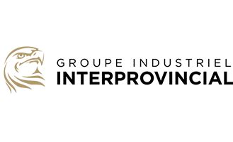
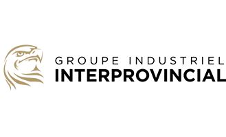

Bienvenue!
Vous trouverez sur mon site quelques-uns de mes projets personnels et de mes expériences de travail.
J'habite à Sherbrooke, QC, pas tant loin de la ferme familiale où j'ai grandi. À l'âge de 16 ans, j'ai commencé à travailler comme programmeur pour la compagnie Hopper où mon grand frère travaillais.
Je me suis ensuite cherché pendant plusieurs années, où j'ai voyagé, fait des jobines et fini mes études pré-universitaire en science de la nature.
Puis, j'ai enfin trouvé un domaine qui me correspondait bien: l'électromécanique. Je suis parti aux Saguenay-Lac-St-Jean pour obtenir mon diplôme en Électromécanique de systèmes automatisés.
J'ai travaillé quelques années dans mon domaine. Je voulais cependant approfondir mes connaissances. C'est pourquoi je me suis inscrit en génie mécanique à l'université de Sherbrooke.
Employé par:


 
